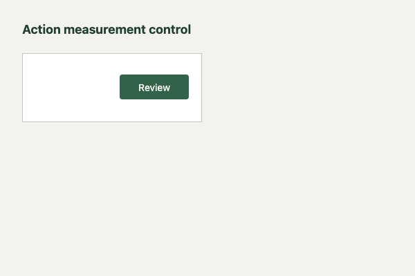
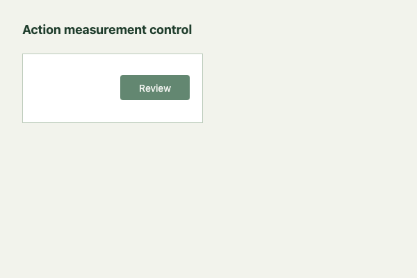
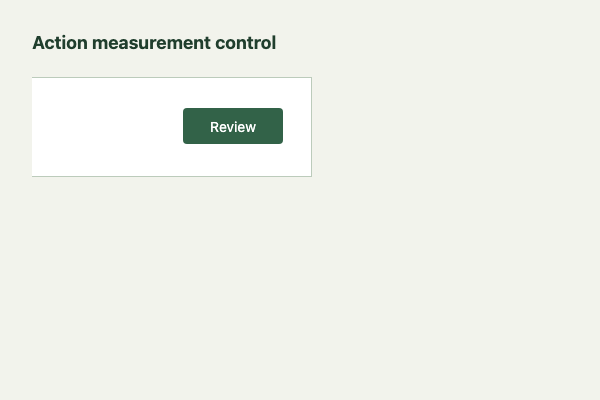
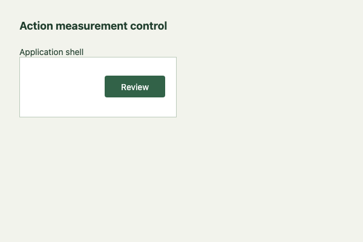
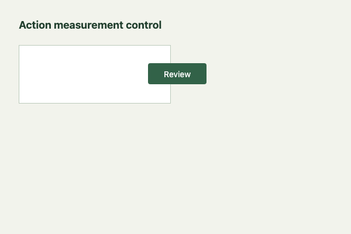
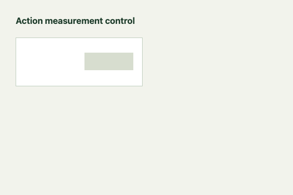
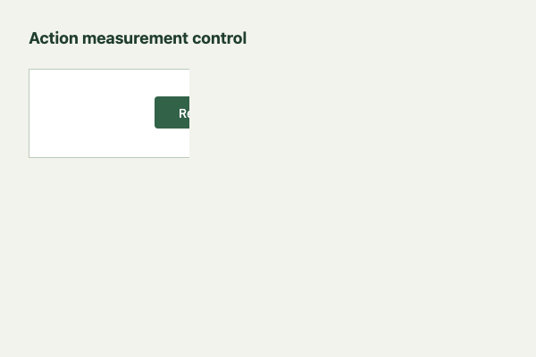
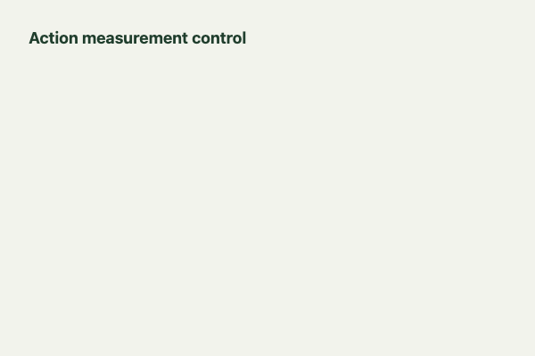
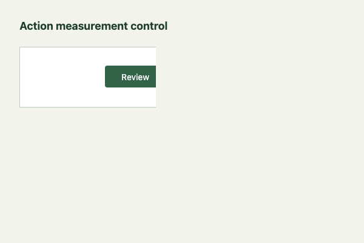

MEASUREMENT CONTROLS · 2026-11-03T01:11:30.159Z
32/32 expected outcomes matched
Curated synthetic scenes test the declared containment and center-point hit rule. These are regression controls, not an independent accuracy benchmark. Healthy controls also pass Playwright’s trial click after the measurement.
10 healthy controls · 6 deliberately broken scenes · 14 uncertain states · 2 documented scope limits.
Known scope limits
A clipped edge or a corner-only overlay can pass if the center remains available. This rule does not establish full hitbox visibility, readability, keyboard usability or accessibility compliance. A contained off-screen action remains inconclusive until a scrolling policy is declared.
healthy · passed

healthy · passed

healthy · passed

healthy · passed

defect · failed

defect · failed

defect · failed

uncertain · inconclusive

limitation · passed

Full corpus
| Scene | Expected / measured | Match | Reason and scope |
|---|---|---|---|
| Ordinary contained action healthy | passed / passed | Matched | A visible, enabled button is contained and unobstructed. Measured: The action is inside its declared region and receives pointer events at its center. |
| Intentional text ellipsis healthy | passed / passed | Matched | Truncating unrelated content does not obstruct the action. Measured: The action is inside its declared region and receives pointer events at its center. |
| Intentional decoration over button healthy | passed / passed | Matched | A pointer-events:none decoration does not intercept the center hit. Measured: The action is inside its declared region and receives pointer events at its center. |
| Icon child receives the hit healthy | passed / passed | Matched | A hit on a descendant belongs to the button. Measured: The action is inside its declared region and receives pointer events at its center. |
| Translated containing component healthy | passed / passed | Matched | Moving both region and target keeps containment. Measured: The action is inside its declared region and receives pointer events at its center. |
| Subpixel edge tolerance healthy | passed / passed | Matched | A 0.5px protrusion is within the declared 1px tolerance. Measured: The action is inside its declared region and receives pointer events at its center. |
| Allowed horizontal scrolling healthy · scroll allowed | passed / passed | Matched | A wide row can be scrolled; the action is inside that declared wide row. Measured: The action is inside its declared region and receives pointer events at its center. |
| Allowed nested vertical scrolling healthy · scroll allowed | passed / passed | Matched | A tall declared region scrolls within its container before measurement. Measured: The action is inside its declared region and receives pointer events at its center. |
| Portal with the correct boundary healthy | passed / passed | Matched | The target is measured within its actual portal region, outside the app shell. Measured: The action is inside its declared region and receives pointer events at its center. |
| Descendant opts out of inherited ARIA disabled state healthy | passed / passed | Matched | The nearest explicit aria-disabled=false state is honored. Measured: The action is inside its declared region and receives pointer events at its center. |
| Action outside its declared region defect | failed / failed | Matched | The action extends 61px beyond the component edge. Measured: The action extends 61px outside its declared region. |
| Pointer-blocking overlay defect | failed / failed | Matched | An opaque sibling covers the center of the button. Measured: Another element or a clipping region blocks the action at its center. |
| Transparent intercepting overlay defect | failed / failed | Matched | Opacity does not determine whether an overlay captures pointer events. Measured: Another element or a clipping region blocks the action at its center. |
| Ancestor clips the action center defect | failed / failed | Matched | The region contains the button, but an ancestor clips its center. Measured: Another element or a clipping region blocks the action at its center. |
| Pointer events disabled on the action defect | failed / failed | Matched | An otherwise enabled visible action rejects pointer input. Measured: Another element or a clipping region blocks the action at its center. |
| Native disabled action uncertain | inconclusive / inconclusive | Matched | A disabled action is outside the enabled-action experiment. Measured: The declared action is disabled in this state. |
| Disabled through a fieldset uncertain | inconclusive / inconclusive | Matched | Native disabled inheritance is honored. Measured: The declared action is disabled in this state. |
| ARIA-disabled action uncertain | inconclusive / inconclusive | Matched | Explicit ARIA disabled state is not a geometry failure. Measured: The declared action is disabled in this state. |
| ARIA-disabled ancestor uncertain | inconclusive / inconclusive | Matched | Inherited disabled state does not masquerade as an enabled-action defect. Measured: The declared action is inside an inert or aria-disabled region. |
| Inert application region uncertain | inconclusive / inconclusive | Matched | A target in an inert region is not interactive in this state. Measured: The declared action is inside an inert or aria-disabled region. |
| Hidden action uncertain | inconclusive / inconclusive | Matched | A hidden action does not establish a layout defect. Measured: The declared action is not rendered visibly. |
| Fully transparent ancestor uncertain | inconclusive / inconclusive | Matched | The action has a box and hit target but is not visibly rendered. Measured: An ancestor makes the declared action fully transparent. |
| Collapsed action uncertain | inconclusive / inconclusive | Matched | A zero-size target cannot be meaningfully evaluated. Measured: The declared action is not rendered visibly. |
| Missing target uncertain | inconclusive / inconclusive | Matched | A missing locator is adapter uncertainty. Measured: Expected one target and one boundary; found 0 and 1. |
| Ambiguous target uncertain | inconclusive / inconclusive | Matched | Two matching targets cannot identify one action. Measured: Expected one target and one boundary; found 2 and 1. |
| Ambiguous boundary uncertain | inconclusive / inconclusive | Matched | Two matching regions do not establish one component boundary. Measured: Expected one target and one boundary; found 1 and 2. |
| Portal with an app-shell boundary uncertain | inconclusive / inconclusive | Matched | The locator points at a shell that does not contain the portalled action. Measured: The declared boundary does not contain the target. |
| Unscrolled off-screen action uncertain | inconclusive / inconclusive | Matched | A contained off-screen center requires an explicit scrolling policy. Measured: The action center is outside the viewport. Declare permitted scrolling before measuring. |
| Explicit viewport requirement violated defect | failed / failed | Matched | A fixed action must have its center in the viewport when that is an explicit component requirement. Measured: The action center is outside the viewport despite the declared viewport requirement. |
| Invalid CSS selector uncertain | inconclusive / inconclusive | Matched | A selector syntax error is adapter uncertainty. Measured: A declared target or boundary selector is invalid. |
| Partial clipping away from center limitation | passed / passed | Matched | Known scope limit: the center remains available although the right edge is clipped. This rule does not establish full hitbox visibility. Measured: The action is inside its declared region and receives pointer events at its center. |
| Overlay covers only a corner limitation | passed / passed | Matched | Known scope limit: an obstruction away from the center is not detected. Measured: The action is inside its declared region and receives pointer events at its center. |
Chromium 156.0.8078.4 · viewport 600×400 · fingerprint cbf00daa9f928ed7d17398215ca4fcdc8945a81823932e1e66de0a8dba81b4cd.
Measurements and per-file hashes · Exact measured rule source. Repeat with npm run controls or npm run test:browser.